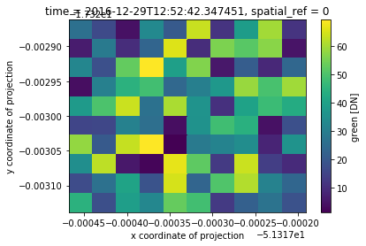

Example - Reproject¶
[1]:
import rioxarray # for the extension to load
import xarray
%matplotlib inline
/home/snowal/miniconda3/envs/geocube/lib/python3.6/site-packages/dask/config.py:168: YAMLLoadWarning: calling yaml.load() without Loader=... is deprecated, as the default Loader is unsafe. Please read https://msg.pyyaml.org/load for full details.
data = yaml.load(f.read()) or {}
/home/snowal/miniconda3/envs/geocube/lib/python3.6/site-packages/distributed/config.py:20: YAMLLoadWarning: calling yaml.load() without Loader=... is deprecated, as the default Loader is unsafe. Please read https://msg.pyyaml.org/load for full details.
defaults = yaml.load(f)
Load in xarray dataset¶
[2]:
xds = xarray.open_dataset("PLANET_SCOPE_3D.nc")
[3]:
xds
[3]:
<xarray.Dataset>
Dimensions: (time: 2, x: 10, y: 10)
Coordinates:
spatial_ref int64 ...
* x (x) float64 4.663e+05 4.663e+05 ... 4.663e+05 4.663e+05
* time (time) datetime64[ns] 2016-12-19T10:27:29.687763 2016-12-29T12:52:42.347451
* y (y) float64 8.085e+06 8.085e+06 ... 8.085e+06 8.085e+06
Data variables:
blue (time, y, x) float64 ...
green (time, y, x) float64 ...
[4]:
xds.green.where(xds.green!=xds.green.rio.nodata).isel(time=1).plot()
[4]:
<matplotlib.collections.QuadMesh at 0x7f185c1ca278>

Reproject¶
[5]:
xds_lonlat = xds.rio.reproject("+proj=longlat +ellps=WGS84 +datum=WGS84 +no_defs")
[6]:
xds_lonlat
[6]:
<xarray.Dataset>
Dimensions: (time: 2, x: 10, y: 10)
Coordinates:
* x (x) float64 -51.32 -51.32 -51.32 ... -51.32 -51.32 -51.32
* y (y) float64 -17.32 -17.32 -17.32 ... -17.32 -17.32 -17.32
* time (time) datetime64[ns] 2016-12-19T10:27:29.687763 2016-12-29T12:52:42.347451
spatial_ref int64 0
Data variables:
blue (time, y, x) float64 6.611 5.581 0.3996 ... 3.491 5.056 3.368
green (time, y, x) float64 7.921 66.15 30.1 ... 21.76 27.29 18.41
Attributes:
creation_date: 2019-04-12 14:35:16.846951
[7]:
xds_lonlat.green.where(xds_lonlat.green!=xds_lonlat.green.rio.nodata).isel(time=1).plot()
[7]:
<matplotlib.collections.QuadMesh at 0x7f185c0c27f0>
